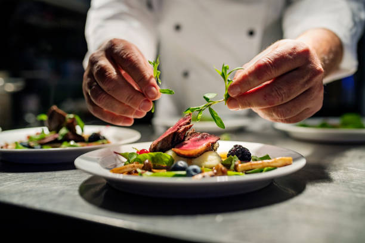

My Recipices
This easy cucumber and tomato salad tastes like summertime in a bowl. The dressing is light and zingy from the vinegar, the cucumbers and onion are so pleasantly crunchy you can’t stop eating them, and the tomatoes are so juicy and sweet they burst in your mouth. It’s perfect as a light summer snack, but would also be a great side dish at any barbecue or cookout or even an addition to other salad

Your Favorite
Nourishing, vibrant, and served without pretension,
paella has held a place of honor and practicality in Spanish homes for centuries.
.
Seafood Dinner
This incredibly easy seafood dinner uses fresh pineapple and a teriyaki-style sauce for the classic sweet-and-tangy profile of Hawaiian shrimp.
Lemon Slices
A fragrant herbed butter and roasted lemon slices complement the sweet,
nutty flavor of red snapper for a super-fresh dish. Complete the meal with colorful Sautéed Zucchini and Bell Peppers.Prep: 9 minutes; Cook: 13 minutes